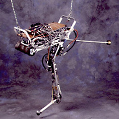

Der am Massachusetts Institute of Technology (MIT) entwickelte, einbeinige Hüpfroboter UNIROO ähnelt kinematisch einem Känguruh. Er hat einen 6,6 kg schweren Körper und ein Bein mit drei Gelenken (Hüfte, Knie, Knöchel) aus geschweißten Aluminiumrohren. UNIROO ist nicht symmetrisch, das Bein ist mit Gelenken versehen, die Hüfte ist nicht im Schwerpunkt lokalisiert und das Bein ist relativ schwer (1/3 des Körpers), und beeinflusst die Körperneigung, da es während des Fluges nach vorne schnellt. Aufgrund seiner Asymmetrie wirkt sich die Bodenbelastung im Stehen auf die Körperneigung aus. Experimente zeigten, dass man Roboter mit nicht-symmetrischer mechanischer Struktur ausbalancieren kann. Uniroo kann ca. eine Minute mit bis zu 1,8 m/s vorwärts hüpfen.